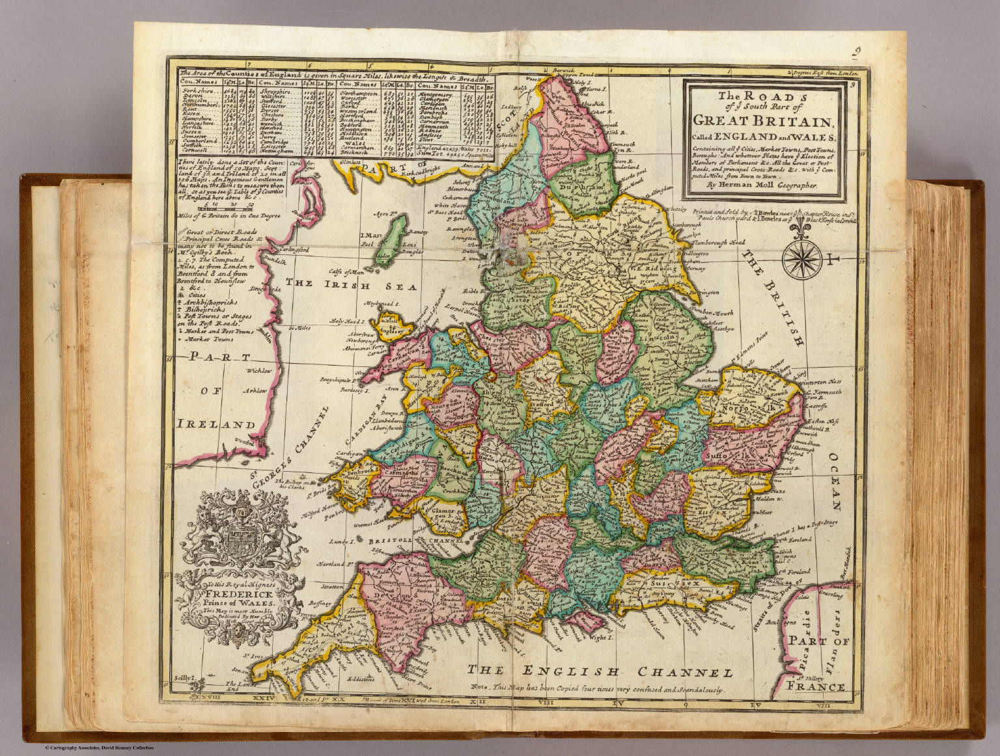

The study of graph colourings began with the colouring of maps. Usually on a map, different regions (countries, counties, states, etc.) are visually distinguished from each other by giving each one a different colour, with the idea that adjance regions should have different colours so that boundaries can be easily seen. For instance, in this old road map of England and Wales, each county is coloured either red, yellow blue or green, and bordering counties have different colours.
Figure5.1.1A historical example of a map colouring. Image courtesy Cartography Associates under a creative commons license
Note that in the map above, only four colours are used. In 1852 Francis Guthrie suggested that for any possible map drawn on a piece of a paper, four colours would be enough. Guthrie's conjecture wasn't proven for more than a hundred years later.
Let's make Guthrie's conjecture precise and connect it to graph theory. Note that as in Example , it makes sense to work with essential the dual picture to the map; we make the regions of the map into vertices, and we put an edge between two regions if they share a vertex. Then we are lead to the following definitions.
Definition5.1.2Colourings and Chromatic number
Let \(\bfG\) be a graph. A \(k\)-colouring (or sometimes vertex colouring) of \(\bfG\) with \(k\) colours is an assignment of one of \(k\) colours to each of the vertices of \(\bfG\) so that adjacent vertices have different colours.
More formally, a \(k\)-colouring is a function \(f:V(\bfG)\to\{1,\dots,k\}\) so that if \(v\sim w\) than we have \(f(v)\neq f(w)\text{.}\)
The chromatic number of a graph \(\bfG\text{,}\) written \(\chi(\bfG)\text{,}\) is the least number of colours needed to colour the vertices of \(G\) so that adjacent vertices are given different colours; that is, it's the least \(k\) so that there exists a \(k\)-colouring of \(\bfG\text{.}\)
The most basic problem you will have to complete about these is the following: given a graph \(\bfG\text{,}\) determine its chromatic number\(\chi(\bfG)\text{.}\) Because the chromatic number is the least number of colours with which it is possible to colour \(\bfG\text{,}\) showing that \(\chi(\bfG)=N\) will always require two steps:
Show that \(\bfG\) admits a colouring with \(\chi(\bfG)=N-1\) colours
Show that \(\bfG\) does not admit a colouring with fewer colours.
What's the chromatic number \(\chi(K_n)\) of the complete graph? Since every vertex is adjacent to every other vertex, any two vertices need to have different colours, and so \(\chi(K_n)\geq n\text{.}\) But certainly if we colour every vertex a different colour, then two adjacent vertices have the same colour, and that's a valid colouring of \(K_n\text{,}\) so \(\chi(K_n)\leq n\text{.}\) So \(\chi(K_n)=n\text{.}\)
Suppose that \(T_n\) is a tree on \(n\geq 2\) vertices. Then \(T_n\) has an edge, and the two vertices on this edge must be different colours, and so \(\chi(T_n)\geq 2\text{.}\) On the other hand, we can colour any tree with two colours as follows: pick any vertex, and colour it blue; then pick any vertex next to it and colour it red, then we can colour the vertices next to that blue, and colour the vertices next to those red, and continuing on outwards from our starting vertex. Hence, \(\chi(T_n)\leq 2\) and so \(\chi(T_n)=2\text{.}\)
Another way of phrasing this is that along any path we colour the vertices alternating red-blue-red-blue-red-blue. This wouldn't work for a general graph, because there may be two paths of different lengths between a pair of vertices \(v\) and \(w\text{.}\) But in trees because there is always exactly one path between any two vertices, and so once we colour one vertex, there's a unique way to colour all the others with two colours in this way.
As with trees, as long as \(n\geq 2\) the graph has at least one edge, and thus has \(\chi(C_n)\geq 2\text{.}\) Can we colour \(C_n\) with two colours?
If we could, the vertices would have to alternate red-blue-red-blue all the way around. This works if \(n\) is even, but if \(n\) is odd then the vertex we started with would have the same colour as the vertex we ended with, but they're adjacent. Thus, when \(n\) is odd we need at least three colours to colour the graph, but it's easy to do with three colours -- we can alternate red-blue-red-blue, but make the very last vertex green, for instance.
Summarizing, we have:
\begin{equation*}
\chi(C_n)=\begin{cases} 2 & n \text{ odd} \\ 3 & n \text{ even} \end{cases}
\end{equation*}
In fact, as thinking about the examples of trees and cycles should show, we've already met one instance of the chromatic number -- a graph \(\bfG\) is bipartite if and only if \(\chi(\bfG)=2\text{,}\) as follows immediately from the definition.
Another useful observation about the examples we've seen is that, since the chromatic number \(\chi(\bfG)\) is the least number of colours needed to colour \(\chi(\bfG)\text{,}\) to show that \(\chi(\bfG)=s\) requires doing two things:
Showing that \(\bfG\) can be coloured with \(s\) colours, and hence \(\bfG\leq s\)
Showing that \(\bfG\) can't be coloured with \(s-1\) colours, and hence \(\bfG\geq s\)
The wheel graph \(W_n\) consists of an \(n\)-cycle together with one additional vertex, that is connected to all vertices of the \(n\)-cycle. Note that this with this convention, \(W_n\) confusingly has \(n-1\) vertices; other people may use a different convention where \(W_n\) has \(n\) vertices, but then it only has a \(n-1\) vertices on the actual wheel.
Since the central vertex is connected to all other vertices, once we colour it, we can never use that colour again. But deleting that vertex we just have the \(n\)-cycle, and we already know the chromatic number of that. So we have \(\chi(W_n)=\chi(C_n)+1\text{.}\)
Definition5.1.7
We write \(\Delta(\bfG)\) for the maxium degree of any vertex in \(\bfG\text{:}\)
We need to show that we can colour any graph \(\bfG\) with \(\Delta(G)+1\) colours. But we can just colour the vertices of \(\bfG\) one by one in whatever order we want. When we go to colour the \(i\)th vertex \(v_i\text{,}\) we look at the \(d(v_i)\) vertices adjacent to \(v_i\text{.}\) Some of them may not be coloured yet, in which case they don't affect anything, but for each vertex adjacent to \(v_i\) that is coloured, we can't use that colour for \(v_i\text{.}\)
So there are most \(d(v_i)\leq \Delta(\bfG)\) colours we have to avoid; if we have \(\Delta(\bfG)+1\) colours to choose from we can always find one that hasn't been used at a vertex adjacent to \(v_i\)